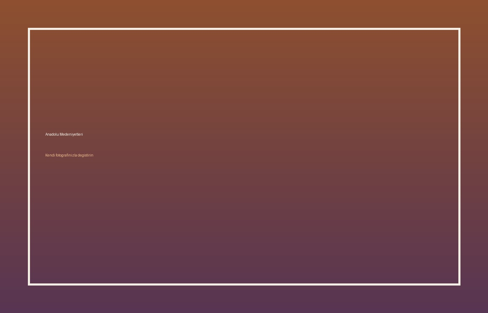

YAMA Museum Guide
Anadolu Medeniyetleri Müzesi
Anadolu’nun Neolitik dönemden Hititlere uzanan uzun hafızası.

YAMA DNA
Bu sayfa zamanla kişisel fotoğraflar, kısa tarihsel anlatı, küçük bir efsane, üç dilli sesli rehber ve ziyaret notlarıyla genişletilecek.
Fotoğraf klasörü
Bu müzenin fotoğraflarını doğrudan bu klasöre ekleyin:
museums/turkey/anadolu-medeniyetleri/photo01.jpg
museums/turkey/anadolu-medeniyetleri/photo02.jpg
museums/turkey/anadolu-medeniyetleri/photo03.jpg